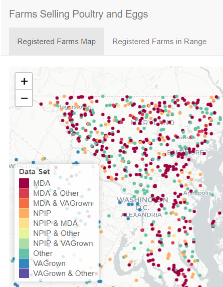
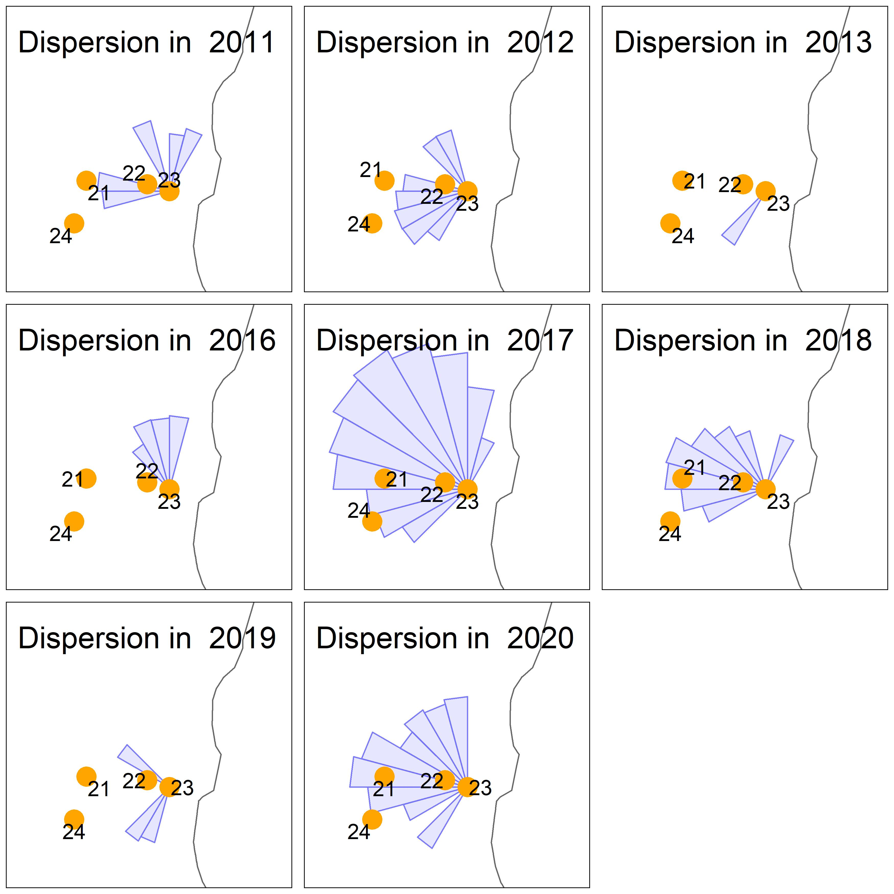
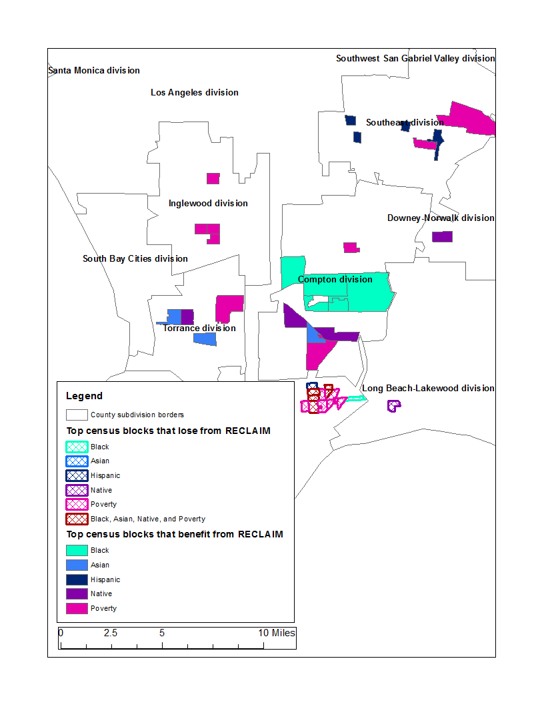
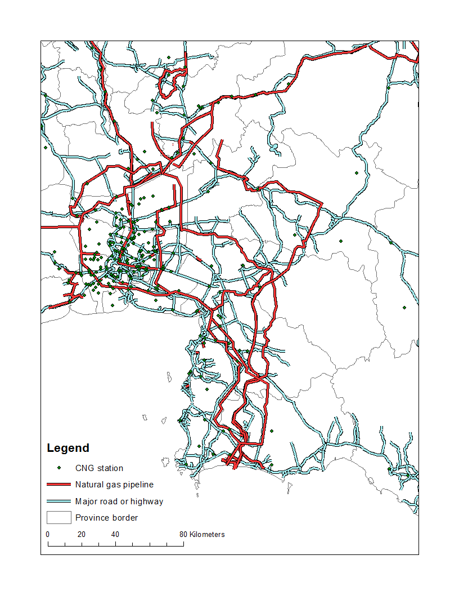
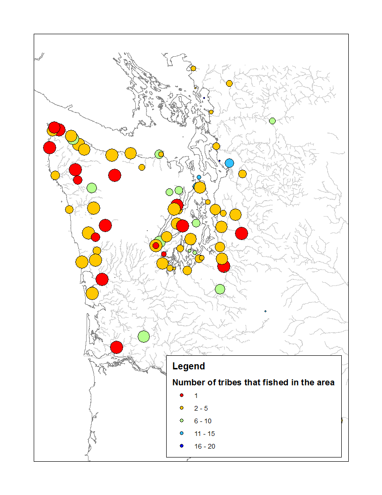

Research
Learn about the latest students’ research projects supervised me on this website.
Grant-Funded Projects

Using Online Data to Identify Farms Selling Poultry and Eggs in Delaware, Maryland, and Virginia
APHIS-FIRE Summer Fellow Project (2020)
This project is a collaboration between USDA-APHIS and UMD FIRE. The research group, lead by Dr. Thanicha Ruangmas and Dr. Lars Olson, identified farms selling poultry and eggs in Delaware, Maryland, and Virginia using publicly available online data. The group also developed new methods to detect registered and unregistered farms selling poultry and egg products and analyzed regional search trends.
Media coverage: The College Post, The Poultry Site, UMD Momentum Magazine

Optimal Control of Invasive Species
APHIS-FIRE Summer Fellow Project (2021)
This project is a collaboration between USDA-APHIS and UMD FIRE. The research project, led by Dr. Thanicha Ruangmas and Dr. Lars Olson, aims to examine the optimal control of Citrus Canker and Citrus Greening infestation at each citrus-growing pixel from the United States Department of Agriculture National Agricultural Statistics Service (USDA-NASS) Cropland Data Layer (2012) in Florida that minimizes the damage on citrus production and the costs of control. An intertemporal and spatial theoretical model is developed to represent each species’ control, growth, and dispersion at each orchard. By incorporating species-specific parameters and optimization, we hope to improve our understanding of how the optimal level of infestation for each species at each citrus-growing pixel depends on the economic and biological factors associated with citrus production in the presence of an invasive pest.
Publication

Who Wins from Emissions Trading? Evidence from California (link)
Paper co-authored with Corbett Grainger
Published in Journal of Environmental and Resource Economics (2018)
We examined the distributional effects of southern California’s air pollution cap-and-trade program and found that higher-income groups and African Americans benefit from cap-and-trade.
Ongoing Projects

The Consequences of Natural Gas Subsidy Reform: The Case of Air Pollution in Thailand (draft)
This paper investigates the effects of a compressed natural gas subsidy and its availability and relation to air pollution in Thailand. As compressed natural gas is adopted in many countries due to a governmental requirement, the voluntary adoption of compressed natural gas has not been comprehensively studied. To my knowledge, this is the first paper that analyzes the mechanisms and air pollution consequences of a voluntary alternative fuel substitution policy. I find that increasing the availability of compressed natural gas, via the setup of natural gas fueling stations, is the largest driver of compressed natural gas adoption and causes SO2 levels to decrease.

Property Rights and Coordinated Use of a Large Scale Natural Resource: Evidence from Fisheries in Washington State
Ongoing project co-authored with Dominic Parker
We examine the effect of different property rights regulations between commercial and tribal fishermen in Washington state. Commercial fishermen are constrained by the number of boats each season. On the other hand, tribal fishermen are constrained by where to fish. Because commercial fishermen can use larger boats to intercept salmon before it migrates to rivers, tribal fishermen are worse off by this policy.